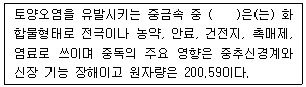
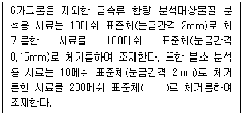
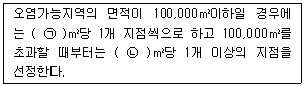
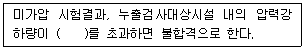
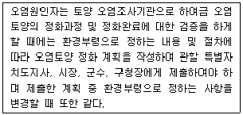
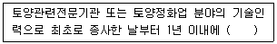
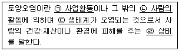

토양환경기사 (2020-08-22 기출문제)
1과목: 토양학개론
1. 주유소 등 지하저장시설에 의한 토양오염을 방지하기 위한 주요기술과 가장 거리가 먼 것은?
- 저장탱크 및 배관 부식산화방지 기술
- 모니터링 기술
- 고형화/안정화 처리기술
- 생물활성대에 의한 처리기술
(정답률: 43%)

2. 지하수 내로유입된 오염물질의 이동을 지체(Retardation)시키는 인자가 아닌 것은?
- 휘발
- 생분해
- 흡착
- 용탈
(정답률: 65%)
3. 토양오염 처리기술의 물리화학적 처리기술 중 토양증기추출법의 장점이 아닌 것은?
- 오염된 토양을 파내지 않고 정화할 수 있다.
- 많은 용량의 오염 토양처리가 가능하다.
- 지하수위에 크게 제한을 받지 않는다.
- 토양의 불균일한 분포일 때 효율적인 제거가 가능하다.
(정답률: 46%)
4. 100cm3 core sampler로 채취한 토양의 무게가 180g이었다.(core 무게 제외) 이 토양을 5℃에서 건조한 무게가 150g이라면 이 토양의 중량수분함량과 용적밀도(가밀도)는? (단, 중량수분함량은 분석값의 수분 보정을 위한 토양오염공정시험기준 상의 수분함량을 의미하지는 않음)
- 중량수분함량(17%), 용적밀도(1.5g/cm3)
- 중량수분함량(17%), 용적밀도(1.8g/cm3)
- 중량수분함량(20%), 용적밀도(1.5g/cm3)
- 중량수분함량(20%), 용적밀도(1.8g/cm3)
(정답률: 42%)
5. 토양 포화수 추출액의 전기전도도에 의한 토양 염류장해의 등급 판정이 틀린 것은?
- 0~2: 염류장해에 의한 수량저하 발생
- 2~4: 염류장해 감수성이 높은 작물에 수량저하 가능성이 있음
- 4~8: 염류장해 감수성이 높은 작물의 수량저하
- 8~16: 염류장해 내성작물에 대해서만 만족한 수량을 얻을 수 있음
(정답률: 48%)
6. 용질과 고체표면과의 반응은 지하수의 수질을 결정하는 중요한 역할을 한다. Freundlich등은 흡착곡선을 바르게 표현한 관계식은? (단, S=흡착량, K=분배계수, C=용질농도, Q=최대흡착력, n=Freundlich지수)
- S=KC
- S=KC1/n
- S=QKC
- S=KCn+1/KCn+Q
(정답률: 63%)
7. 토양의 용적비중이 1.2, 입자비중이 2.4일 때 토양의 공극률(%)은?
- 30
- 40
- 50
- 60
(정답률: 78%)
8. 위해성평가에 초기단계인 유해성확인단계에서 조사되어야 할 내용이 아닌 것은?
- 물리화학적 성질
- 동물독성자료
- 불확실성계수
- 발암등급분류
(정답률: 40%)
9. 납(Pb)에 대한 설명으로 가장 거리가 먼 것은?
- 테트라에틸납과 테트라메틸납이 갈솔린의 Antik-nock첨가제로 이용된다.
- 인간이나 동물이 대량의 납을 섭취한다면 간장, 위장, 골(骨)에 집적되고 독성작용이 일어난다.
- 납은 식물체 내에서는 거의 이동하지 않는다.
- 납은 토양에 2가 양이온으로 흡착되며 많은 양이 토양에서 방출된다. 납은 토양에 2가 양이온으로 흡착하기 때문에 토양에서 납이 방출되는 것은 거의 없다.
(정답률: 59%)
10. 관개용수의 나트륨흡착비가 7.5이고, Ca2+과 Mg2+이 각각 65mg/L와 92mg/L일 때, Na+의 농도(mg/L)는?
- 약 17.6
- 약 66.5
- 약 403.7
- 약 1,528.4
(정답률: 25%)
11. 1:1형 광물로서 결정 단위간의 겨랍이 강한 수소결합이어서 물 분자의 출입이 불가능하여 수축, 팽창이 불가능한 점토 광물은?
- 카올리나이트
- 일라이트
- 스멕타이트
- 몬모릴로나이트
(정답률: 73%)
12. 지하수흐름에서 Darcy의 법칙인 것은? (단, Q=총유량, K=수리전도도, i=동수경사, A=단면적)
- Q=Ai/K
- Q=K/A
- Q=KiA
- Q=Ki
(정답률: 71%)
13. 규산 점토 광물에 속하지 않는 것은?
- 일라이트(illite)
- 몬노릴로나이트(montmorillonite)
- 카올리나이트(kaolinite)
- 철산화물
(정답률: 79%)
14. 중금속에 관한 설명으로 ( )에 알맞은 것은?

- 카드뮴
- 비소
- 납
- 수은
(정답률: 60%)
15. 지하수 및 대수층과 관련된 용어 중 “자유면대수층에서 지하수면의 단위 상승 혹은 강하에 의해 단위면적을 통해 자유면 대수층의 저류지하수로부터 유입 혹은 유출되는 물의 부피”를 뜻하는 것은?
- 비산출율
- 비보유율
- 비표면계수
- 비전류계수
(정답률: 73%)
16. 토양수분장력이 pF 4라면 이를 물기 등의 압력으로 환산한 값으로 가장 적절한 것은?
- 약 1기압
- 약 4기압
- 약 8기압
- 약 10기압
(정답률: 52%)
17. 이온 교환 효율을 큰 것에서 작은 것 순으로 옳게 나타낸 것은?
- K＞Mg＞Na
- K＞Na＞Mg
- Mg＞Na＞K
- Mg＞K＞Na
(정답률: 52%)
18. 일반적으로 토양의 중금속 흡착 능력을 판단하는 항목으로 사용되지 않는 것은?
- 유기물함량
- 양이온교환용량
- 전기전도도
- 점토함량
(정답률: 62%)
19. 토양의 비열과 용적열용량에 관한 설명으로 가장 거리가 먼 것은?
- 토양의 비열은 토양 1g의 온도를 1℃ 높이는데 필요한 열량이다.
- 토양의 비열이 크면 온도의 상승 및 하강이 느리다.
- 토양의 비열은 물의 비열의 2~4배 정도이다.
- 토양 내 모래 함량이 많을수록 용적열용량이 작아진다.
(정답률: 75%)
20. 비점오염원(non point contaminant source)으로 가장 적합한 것은?
- 축산 배수 배출원
- 공단 산업폐수 배출원
- 도로 노면 배수
- 유류저장고
(정답률: 84%)
2과목: 토양 및 지하수 오염조사기술
21. 시험용 시료의 조제방법에 관한 설명으로 ( )에 가장 적합한 것은?

- 눈금간격 0.075mm
- 눈금간격 0.⑤mm
- 눈금간격 0.01mm
- 눈금간격 0.0⑤mm
(정답률: 72%)
22. 기체크로마토그래피 분석법 중 수소불꽃이온화검출기(FID)로 검출되는 가장 적합한 것은?
- PCB
- 유기수온
- 잔류 농약
- TPH
(정답률: 59%)
23. 토양수분함량 시험에 대한 설명으로 틀린 것은?
- 증발접시는 미리 1⑤~110℃에서 1시간 건조시킨다.
- 시료를 1⑤~110℃의 건조기 안에서 4시간 이상 항량이 될 때까지 건조한다.
- 증발접시는 시료두께를 10mm 이하로 넓게 펼 수 있는 정도로 하부 면적이 넓은 것을 사용하여야 한다.
- 이 시험기준에 의해 토양 중 수분은 0.01%까지 측정한다.
(정답률: 66%)
24. 토양오염관리대상시설지역 토양시료의 채취 및 보관에 관한 설명으로 틀린 것은?
- 토양시료는 직경 2.5cm 이상의 시료채취봉이 들어있는 타격식이나 나선형식의 토양시추 장비로 채취한다.
- 시료채취 봉을 꺼내서 오염의 개연성이 가장 높다고 판단되는 부위 ±15cm를 시료부위로 한다.
- 오염의 개연성이 판단되지 않을 경우는 시료채취 봉 중앙의 토양 15cm를 시료부위로 한다.
- 토양시추장비는 시추 중에 물이나 기름이 유입되지 않는 것이어야 한다.
(정답률: 74%)
25. 광산활동지역에 대한 개황조사를 실시하고자 한다. 표토의 시료채취 밀도에 대한 설명으로 ( )에 알맞은 것은?

- ㉠ 10,000, ㉡ 30,000
- ㉠ 10,000, ㉡ 50,000
- ㉠ 20,000, ㉡ 50,000
- ㉠ 20,000, ㉡ 100,000
(정답률: 66%)
26. pH가 5인 용액 2L와 pH 4인 용액 3L가 혼합된 혼합용액의 pH는?
- 4.2
- 4.3
- 4.4
- 4.5
(정답률: 43%)
27. 저장물질이 있는 누출검사대상시설 액상부의 시험방법에 대한 설명으로 틀린 것은?
- 이 방법은 일정 체적을 가진 누출검사대상시설에 일정량의 액체가 담겨 있을 때 시행한다.
- 전자기파, 초음파, 압력변화, 부력, 자기변형, 정전용량 또는 이와 동등한 방식을 이용하여 누출검사 대상시설 내 액량변화를 측정하여 누출량을 산정한다.
- 누출량 산정에 온도보정을 요하는 측정방식은 측정시간동안 온도변화를 측정하여 보정한다.
- 액상부의 누출검사는 누출검사대상시설의 액량이 검사업체에서 보유하고 있는 누출측정기기가 측정할 수 있는 저장시설 높이에 상관없이 적용한다.
(정답률: 66%)
28. 저장물질이 있는 지하매설저장시설의 기상부시험법에서 미감압법 측정방법의 판정기준과 관련 없는 것은?
- G값
- T값
- P값
- S값
(정답률: 62%)
29. 유도결합플라스마-원자발광분광계의 구성을 옳게 나열한 것은?
- 시료도입부-광원부-파장선택부-측정부-기록부
- 시료도입부-고주파전원부-광원부-분광부-연산처리부 및 기록부
- 시료도입부-파장분리부-광원부-검출부-기록부
- 시료도입부-저주파전원부-분광부-측광부-기록부
(정답률: 57%)
30. 유리전극법을 활용한 수소이온농도 측정에 관한 설명으로 틀린 것은?
- pH를 0.1까지 측정한다.
- 유리전극은 일반적으로 산화 및 환원성 물질들에 의해 간섭을 받는다.
- 토양 중 염류의 농도가 높아지면 pH 값이 낮아지는 경우가 있다.
- 토양을 오랫동안 방치하면 미생물의 작용으로탄산가스가 발생하여 pH가 낮아질 수 있다.
(정답률: 55%)
31. 액체의 농도 및 용액에 대한 설명으로 틀린 것은?
- 액체의 농도를(1→10), (1→100) 또는 (1→1,000)등으로 표시하는 것은 고체성분에 있어서는 1g, 액체성분에 있어서는 1mL를 용매에 녹여 전체 양을 10mL, 100mL 또는 1,000mL로 하는 비율을 표시한 것이다.
- 액체시약의 농도에 있어서 예를 들어 염산(1+2)이라고 되어 있을 때에는 염산 1mL와 물 2mL를 혼합하여 조제한 것을 말한다.
- 노말농도는 용액 2L 중에 들어 있는 용질의 g-다량수(eq)를 말한다.
- 용액의 앞에 몇 %라고 한 것은 수용액을 말한다.
(정답률: 61%)
32. 토양정밀조사의 세부방법 가운데 오염토양정화 및 토양오염 방지를 위한 조치가 필요한 지역의 오염물질종류, 오염면적 및 오염범위 등을 파악하기 위한 사전 개략조사는?
- 개황조사
- 기초조사
- 상황조사
- 자료조사
(정답률: 66%)
33. pH표준액과 pH값이 맞게 연결된 것은? (단, 온도는 섭씨 15도)
- 프탈산염 표준액 : pH 4.00
- 인산염 표준액 : pH 9.27
- 탄산염 표준액 : pH 4.90
- 수산염 표준액 : pH 12.81
(정답률: 59%)
34. 토양시료분석의 정밀·정확도를 관리하기 위한 정도관리요소 중 시료와 비슷한 매질 중 에서 한계는?
- 기기검출한계
- 정량한계
- 방법검출한계
- 유효정량한계
(정답률: 31%)
35. 저장물질이 있는 누출검사대상시설(기상부의 시험법)의 판정기준으로 ( )에 옳은 것은?

- 3mmH20
- 6mmH2O
- 9mmH2O
- 12mmH2O
(정답률: 65%)
36. 토양오염공정시험기준의 규정에 의한 누출검사대상시설에 관한 내용으로 틀린 것은?
- 부속배관이라 함은 누출검사대상시설에 용접 또는 나사조임방식으로 직접 연결되는 배관을 말한다.
- 배관접속부라 함은 누출검사대상시설과 부속배관, 부속배관과 배관을 연결하기 위하여 용접접합 또는 나사조임방식 등으로 접속한 부분을 말한다.
- 지하매설배관이라 함은 부속배관의 경로 중 지하에 매설되어 있으나 누출 여부를 육안으로 직접 확인할 수 있는 배관을 말한다.
- 누출검지관이라 함은 액체의 누출 여부를 누출검사대상시설 외부에 직접 또는 간접적으로 확인하기 위해 설치된 관을 말한다.
(정답률: 70%)
37. 토양오염도검사를 위한 토양시료 채취 시 토양시료채취기(sampler)를 사용할 경우 토양 표면의 잡초나 유기물 등 이물질 층을 제거한 후 채취하는 시료의 양(kg)은? (단, 일반지역)
- 약 0.5
- 약 1.0
- 약 1.5
- 약 2.0
(정답률: 71%)
38. 토양 중 금속류를 측정하는 방법 가운데, 유도결합플라스마-원자발광분광법에 대한 설명으로 틀린 것은?
- 시료를 고주파유도코일에 의하여 형성된 아르곤 플라스마에 주입하여 0~273K에서 들뜬원자가 바닥상태로 이동할 때 방출하는 방광강도를 측정하여 원소의 분석을 수행한다.
- 토양 중에 구리, 납, 니켈, 비소, 아연, 카드뮴 등의 금속류 분석에 적용한다.
- 분석하는 금속원소 이외에서 발광하는 파장은 측정을 간섭한다. 어떤 원소가 동일파장에서 발광할 때, 파장의 스펙트럼선이 넓어질 때, 이온과 원자의 재결합으로 연속발광할 때, 분자 띠 발광 시에 간섭이 발생한다.
- 간섭이 의심되면, 바탕선 보정, 연속희석법, 표준물질 첨가법 등의 조치를 취할 수 있다.
(정답률: 35%)
39. 검량선에서 얻어진 벤젠의 검출량이 13.5ng이었을 때 토양 중 벤젠농도(mg/kg)는? (단, 수분 보정한 토양시료의 건조중량=45g, 사용한 메틸알코올의 양=10mL, 검액의 주입량=10µL, 희석배수=1)
- 1.0
- 2.5
- 3.0
- 4.5
(정답률: 60%)
40. 원자흡수분광광도법의 분석에서 사용되는 조연성가스와 가연성가스에 대한 설명으로 거리가 먼 것은?
- 일반적으로 가연성가스로 아세틸렌을 조연성가스로 공기를 사용한다.
- 수소-공기와 아세틸렌-공기는 거의 대부분의 원소 분석에 유효하게 사용할 수 있다.
- 어떠한 종류의 불꽃이라도 가연성가스와 조연성가스의 혼합비는 감도에 크게 영향을 주므로 금속의 종류에 따라 최적혼합비를 선택하여 사용한다.
- 수소-공기는 원자 외 영역에서 불꽃자체에 의한 흡수가 많기 때문에 이 파장영역에서 흡수선을 갖는 원소의 분석에 적당하지 않다.
(정답률: 55%)
3과목: 토양 및 지하수 오염정화 기술
41. 토양증기추출과 bioventing 기술을 효과적으로 적용하기 위해 공정설계에 앞서 거치는 예비절차에 포함되는 내용이 아닌 것은?
- 정해진 시간 내에 복구목표를 달성하기 위한 공극부피 교환량 계산
- 오염물 이동제어변수를 고려한 가능 제어속도 계산
- 오염 이동속도 한계에 따른 기술 타당성 검토
- 공기 추출한계 선정
(정답률: 35%)
42. 오염지하수 정화에 반응벽체 공법을 적용할 때 반응벽체의 두께는 2.5m. 공극률은 0.42, 지하수의 Darcy 속도는 0.4m/hr일 경우 지하수의 반응역체 내 체류시간(hr)은?
- 2.6
- 3.8
- 4.4
- 5.2
(정답률: 64%)
43. 토양세척공정에 대한 설명으로 옳지 않은 것은?
- 최종처리공정으로 이용되기보다 오염토양의 양을 단기간에 현저히 줄이고자 할 때 이용된다.
- 토양세척공정의 효과는 토양의 성상에 따른 영향보다 오염물질의 종류에 따른 차이가 매우 크다.
- 휘발성 유기화합물의 경우 단순한 물세척으로 높은 제거효율을 나타낸다.
- 일반적인 세척공정에서 배출되는 토양 중 대부분의 부피를 차지하는 것은 모래 및 자갈류이다.
(정답률: 36%)
44. 유기오염물로 오염된 토양을 호기성 분해 과정을 이용한 바이오파일법으로 처리하는 경우, 분해에 관여하는 다음 미생물 중에서 중온성이 아닌 고온성 미생물에 속하는 것은?
- B. coagulans
- Cellulomonas folia
- P. putida
- Pseudomonas fluorescence
(정답률: 29%)
45. TCE로 오염된 지하수의 예비실험을 한 결과 1.4mg/L·min의 오존으로 1시간 처리 시 환경기준에 적합한 제거율을 보였다. 지하수 오염농도가 150mg/L, 유량이 2,000L/min일 경우 환경기준에 적합하도록 처리하기 위한 최소 오존 필요량(kg/day)은?
- 약 242
- 약 318
- 약 423
- 약 538
(정답률: 34%)
46. 지하수 처리기술 중 Air Sparging에 관한 설명으로 틀린 것은?
- 오염물질이 분포된 깊이와 현장의 특수한 지질학적인 특성을 고려해야 한다.
- 오염된 지하수를 양수하여 대기 중에서 공기를 분사하므로 다량의 지하수정화가 가능하다.
- 지하수 유량, 오염물질의 분포 깊이 등의 인자에 영향을 받는다.
- 휘발성 유기물질과 유류오염물질이 처리대상이다.
(정답률: 50%)
47. 오염물질의 생분해에 관한 설명으로 틀린 것은?
- 직선구조의 탄화수소는 호기성조건에서 생분해되기 쉽다.
- 치환되지 않은 탄화수소 종류가 일반적으로 빠르게 분해된다.
- 할로겐화합물의 할로겐 원소 수가 커질수록 생분해 지속도는 감소한다.
- 용해도가 낮은 물질은 생분해도가 낮을 수 있다.
(정답률: 26%)
48. 토양증기추출법의 적용이 어려운 오염물질은?
- 벤젠
- 톨루엔
- 휘발유
- 윤활유
(정답률: 66%)
49. 열탈착기술의 기본적인 제어장치가 아닌 것은?
- 분진 제거를 위한 사이클론과 백필터
- 잔존 유기물 제거를 위한 활성탄
- 산성증기 제거를 위한 벤투리 세정기
- 탈수를 위한 필터프레스
(정답률: 52%)
50. 고온 열탁착법에서 오염토양에 적용되는 가장 적절한 열탁착온도 범위는?
- 100~300℃
- 400~600℃
- 800~1,000℃
- 1,200~1,500℃
(정답률: 63%)
51. 토양경작버(land farming)의 적용성에 대해 잘못 기술한 것은?
- 총 종속영양미생물의 온도가 1,000CFU/g 건조토양 이상일 경우 적합하다.
- 토양의 pH는 6~8정도의 중성일 때 적합하다.
- 토양의 온도는 10~45℃ 정도를 유지해야 한다.
- 미생물의 적절한 성장을 위해 수분의 함량을 5~15% 정도로 유지해야 한다.
(정답률: 43%)
52. 토양복원기술 중 원위치(in-situ) 정화기술과 가장 거리가 먼 것은?
- 토양증기추출법(Soil Vapor Extraction)
- 생분해법(Biodegradation)
- 유리화(Vitrification)
- 토지경작법(Landfarming)
(정답률: 60%)
53. 자일렌 100mg/L의 농도로 오염된 지하수 3,000m3을 처리하기 위해 필요한 활성탄의 양(kg)은? (단, 자일렌에 대한 활성탄의 흡착능=0.0789g-Xylenes/g-carbon)
- 7,600
- 1,400
- 2,300
- 3,800
(정답률: 45%)
54. Bioventing 공법의 영향인자에 관한 설명으로 틀린 것은?
- 일반적으로 사질토일 경우에 적절히 적용된다.
- 오염물 제거 깊이는 3~10m 범위이다.
- 일반적으로 최적 pH 범위는 약 6~8정도이다.
- 균일한 처리가 가능하고 오염물질 확산의 우려가 없다.
(정답률: 63%)
55. 생물학적 복원 기술에 관한 설명으로 가장 거리가 먼 것은?
- 저농도 및 광범위한 오염에 적합하다.
- 유해한 중간물질을 만드는 경우가 있어 분해생성물의 유무를 조사할 필요가 있다.
- 다양한 물질에 의해 오염되어 있는 경우에는 별도의 기술개발이 필요 없다.
- 약품을 많이 사용하지 않기 때문에 2차 오염이 적다.
(정답률: 62%)
56. 자연정화기법에 의하여 오염 부지를 처리하는 경우에 작용하는 현상이 아닌 것은?
- 오염물질의 자체적인 분산, 희석, 흡착, 휘발 현상
- 지하수 함량에 의한 희석과 혼합현상
- 토양 내 생분해로 인한 생물학적 분해 및 전이현상
- 계면활성제의 주입에 의한 오염물질 탈착현상
(정답률: 60%)
57. 토양에 함유된 화학성분 중에서 주요 산화물의 함량순위를 바르게 나열한 것은?
- SiO2 ＞ Al2O3 ＞ FeO + Fe2O3 ＞ CaO + MgO
- SiO2 ＞ Al2O3 ＞ CaO + MgO ＞ FeO + Fe2O3
- Al2O3 ＞ SiO2 ＞ CaO + MgO ＞ FeO + Fe2O3
- Al2O3 ＞ FeO + Fe2O3 ＞ SiO2 ＞ CaO + MgO
(정답률: 63%)
58. 저온 열탈착법의 장단점으로 옳지 않은 것은?
- 처리효율이 높고 단기간에 처리가 가능하다.
- 카드뮴이나 수은 등을 비롯한 거의 모든 중금속 정화에 효과가 탁월하다.
- 다른 정화기술에 비해 높은 에너지 비용이 소요되어 경제성이 낮다.
- 수분함량이 높거나 점토 및 휴믹산 등을 높게 함유한 토양의 경우 반응시간이 길어지고 처리비용이 증가한다.
(정답률: 55%)
59. 미생물에 의한 호흡과정에서 같은 양이 사용되는 경우 전자수용체로서 가장 효율이 높은 물질은?
- 과산화수소
- 공기로 포화된 물
- 산소로 포화된 물
- 질산염이 다량 함유된 물
(정답률: 48%)
60. 미생물의 종류별 탄소원과 에너지원의 연결로 틀린 것은? (단, 탄소원-에너지원)
- 화학합성 자가영양 : CO2-유기물의 산화환원반응
- 화학합성 종속영양 : 유기탄소 – 유기물의 산화환원반응
- 광합성 종속영양 : 유기탄소-빛
- 광학성 자가영양 : CO2-빛
(정답률: 64%)
4과목: 토양 및 지하수 환경관계법규
61. 특정토양오염관리대상시설의 변경신고 사유가 아닌 것은?
- 특정토양오염관리대상시설을 교체하거나 토양오염방지시설을 변경하는 경우
- 특정토양오염관리대상시설의 사용을 종료하거나 폐쇄하는 경우
- 사업장의 위치 또는 대표자가 변경되는 경우
- 특정토양오염관리대상시설에 저장하는 오염물질을 변경하는 경우
(정답률: 52%)
62. 다음 사항을 위반하여 오염토양정화계획 또는 오염토양정화변경계획을 제출하지 아니한자에 대한 과태료 부과 기준은?

- 200만원 이하의 과태료
- 300만원 이하의 과태료
- 500만원 이하의 과태료
- 1,000만원 이하의 과태료
(정답률: 54%)
63. 토양정화업자의 준수사항으로 틀린 것은?
- 토양정화업자는 매년 1월 31일까지 전년도의 토양정화실적을 시·도지사에게 보고하여야 한다.
- 정화현장에 오염토양의 정화공정도 및 정화일지를 작성하여 비치하고, 정화일지는 2년간 보관하여야 한다.
- 토양관련전문기관의 정화검증을 위한 정화현장 방문, 시료의 채취 드어 검증업무수행을 방해해서는 아니된다.
- 반입토양 보관시설에 울타리를 설치하여 반입토양의 유실을 방지하여야 한다.
(정답률: 54%)
64. 환경부장관 또는 시·도지사 또는 시장, 군수, 구청장은 토양보전을 위하여 필요하다고 인정하는 경우에는 토양정밀조사를 실시할 수 있는데 정밀조사 대상이 되는 지역과 가장 거리가 먼 것은?
- 토양오염도 상시측정의 결과 우려기준을 넘는 지역
- 토양오염실태조사 결과 우려기준을 넘는 지역
- 특정토양오염유발시설이 설치되어 우려기준을 넘을 가능성이 크다고 인정되는 지역
- 토양오염사고 등으로 인하여 환경부장관, 시·도지사 또는 시장·군수·구청장이 우려기준을 넘을 가능성이 크다고 인정하는 지역
(정답률: 59%)
65. 토양오염우려기준(1지역)에 대한 항목 및 기준치가 잘못 연결된 것은?
- 수은: 4mg/kg
- TCE: 8mg/kg
- 니켈: 50mg/kg
- 불소: 400mg/kg
(정답률: 26%)
66. 공장용지에서 구리의 토양오염대책기준(단위:mg/kg)은?
- 1,000
- 2,000
- 3,000
- 6,000
(정답률: 32%)
67. 토양환경보전법령에 의하여 환경부장관이 고시하는 측정망설치계획에 포함되지 않은 것은?
- 측정망 설치시기
- 측정망 배치도
- 측정지점의 위치 및 면적
- 측정말 폐쇄시기
(정답률: 64%)
68. 대책계획인 오염토양개선사업과 가장 거리가 먼 것은?
- 객토 및 토양개량제의 사용 등 농토배양사업
- 오염된 수로의 준설사업
- 오염토양의 외부차단사업
- 오염물질의 흡수력이 강한 식물식재사업
(정답률: 54%)
69. 토양관련전문기관은 토양오염검사신청서를 받은 날로부터 며칠 이내에 시료채취 또는 누출검사를 하여야 하는가?
- 1일
- 7일
- 14일
- 21일
(정답률: 62%)
70. 토양정화업의 등록요건 중 시설, 장비에 관한 기준으로 틀린 것은?
- 반입정화 시설: 정화시설 400제곱미터 이상, 보관시설 400제곱미터 이상
- 시료채취기 1대(깊이 2m 이상 시료 채취가 가능할 것)
- 휴대용 가스측정장비 1식(휘발성유기화합물질, 산소, 이산화탄소 및 메탄의 측정이 가능할 것)
- 현장용 수질측정기 1식(수소이온농도, 수온, 전기전도도, 용존산소 및 산화환원전위의 측정이 가능할 것)
(정답률: 65%)
71. 토양환경평가에 관한 내용으로 옳지 않은 것은?
- 토양환경평가의 절차 및 방법의 구체적인 사항은 환경부장관이 정하여 고시한다.
- 개황조사: 시료의 채취 및 분석을 통한 토양오염의 정도와 범위 조사
- 토양환경평가는 기초조사, 개황조사, 정밀조사의 순서로 실시한다.
- 기초조사: 자료조사, 현장조사 등을 통한 토양오염 개연성 여부 조사
(정답률: 52%)
72. 토양관련전문기관 또는 토양정화업의 기술인력은 국립환경인력개발원장이 개설하는 토양환경관리의 교육과정을 이수하여야 한다. 신규교육에 대한 기준으로 옳은 것은?

- 8시간
- 18시간
- 24시간
- 48시간
(정답률: 49%)
73. 지하수오염 유발시설에 해당하는 것은?
- 지하수보전구역 외의 지역에 설치된 송유용 탱크
- 지하수보전구역에 설치된 시간당 최대 폐수량이 0.01세제곱미터인 금속광업시설의 폐수 배출시설
- 지하수보전구역에 설치된 비위생 매립시설
- 지하수보전구역 외의 지역에 설치된 차단형 매립시설
(정답률: 32%)
74. 토양보전대책지역을 지정하는 권한을 가진 자는?
- 환경부장관
- 시·도지사
- 지방환경관서의 장
- 시장·군수·구청장
(정답률: 66%)
75. 지하수를 공업용수로 이용하는 경우의 지하수의 수질기준으로 틀린 것은?
- pH:5.0~9.0
- 질산성 질소:80mg/L 이하
- 염소이온:500mg/L 이하
- 수은:0.001mg/L 이하
(정답률: 40%)
76. 지하수에 관한 조사업무를 대행할 수 있는 지하수 관련조사전문기관이 아닌 것은?
- 한국수자원공사
- 한국농어촌공사
- 한국건설기술연구원
- 한국환경보전협회
(정답률: 53%)
77. 토양환경보전법령상 정의된 토양오염을 나타낸 것으로 밑줄 친 부분 중 잘못된 것은?

- ㉠
- ㉡
- ㉢
- ㉣
(정답률: 60%)
78. 토양오염도검사수수료가 가장 저렴한 검사 항목은?
- 불소
- 시안
- 유기인
- 아연
(정답률: 63%)
79. 토양 관련 전문기관의 준수사항이 아닌 것은?
- 토양시료채취는 토양 관련 전문기관 지정 시 신고된 기술요원이 하여야 한다.
- 토양 관련 전문기관은 도급받은 토양 관련 전문기관의 업무 일부를 하도급할 수 있다.
- 토양관련전문기관은 매년 1월 31일까지 전년도 검사실적을 지방환경관서의 장에게 보고 하여야 한다.
- 토양시료의 분석은 형식승인과 정도검사를 받은 장비를 사용하여 분석하여야 한다.
(정답률: 65%)
80. 토양환경보전법령상 오염토양 정화법으로 가장 거리가 먼 것은?
- 미생물이나 식물을 이용한 오염물질의 분해·흡수 등 생물학적 처리
- 오염물질의 차단·분리추출·세척처리 등 물리·화학적 처리
- 오염토양의 위생적 매립 처리
- 오염물질의 소각·분해 등 열적 처리
(정답률: 56%)